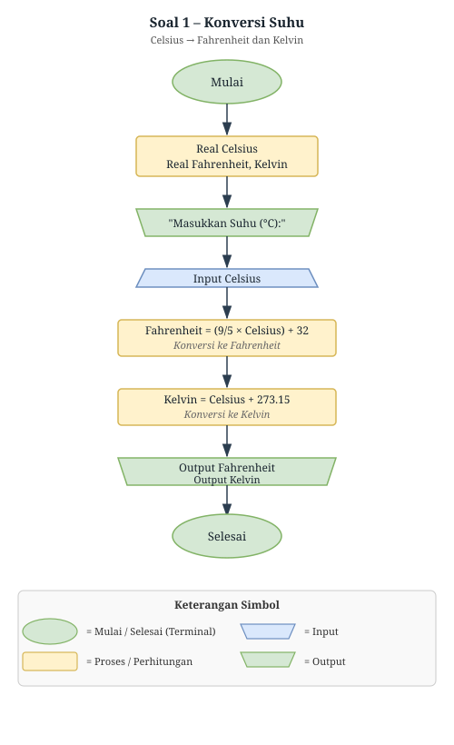
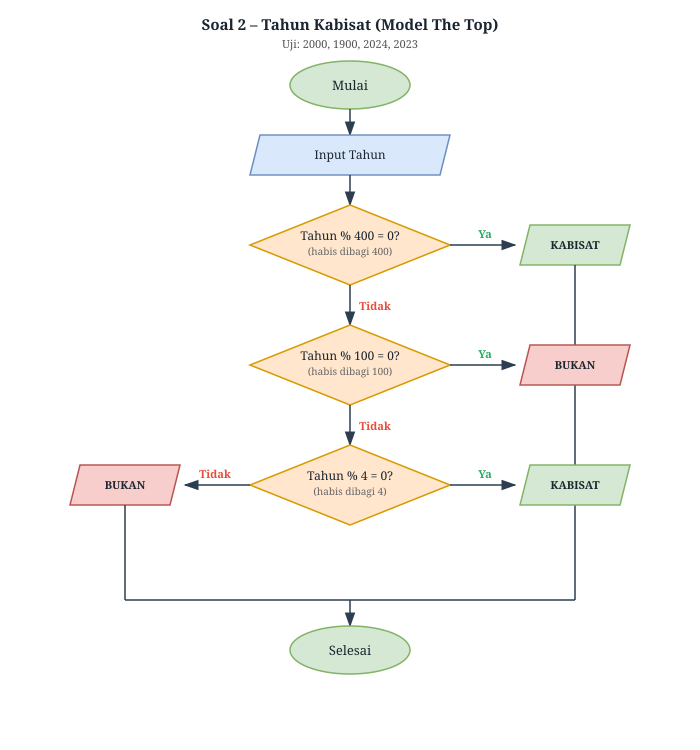
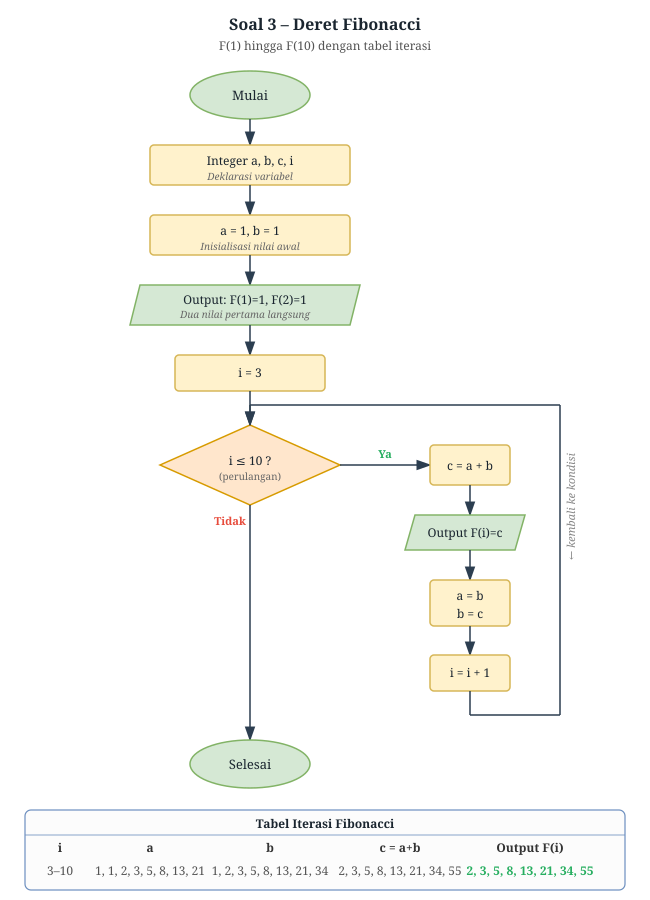
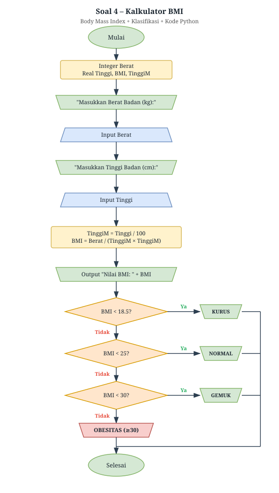
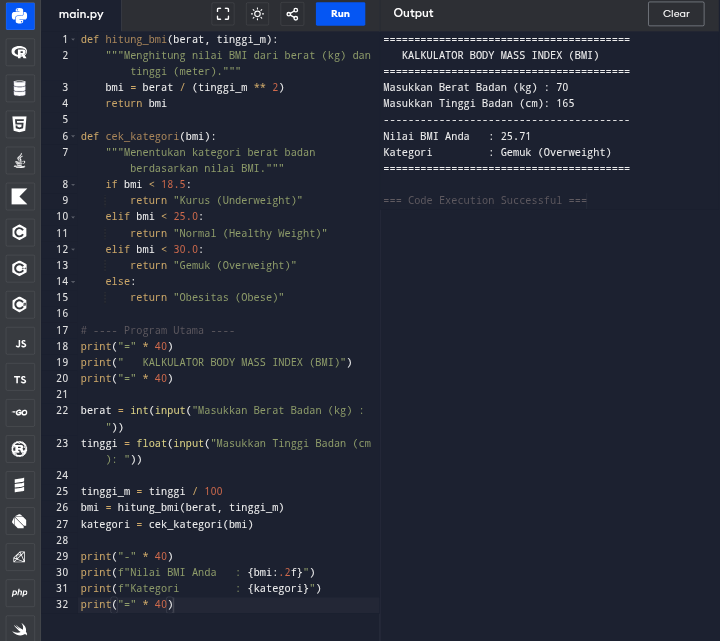

| Input (°C) | Fahrenheit (°F) | Kelvin (K) |
|---|---|---|
| 0 | 32.00 | 273.15 |
| 100 | 212.00 | 373.15 |
| -40 | -40.00 | 233.15 |
| 37 | 98.60 | 310.15 |
Catatan: -40°C adalah titik di mana Celsius dan Fahrenheit memiliki nilai yang sama.

| Tahun | % 400 | % 100 | % 4 | Hasil |
|---|---|---|---|---|
| 2000 | 0 ✓ | — | — | Kabisat |
| 1900 | ≠0 | 0 ✓ | — | Bukan |
| 2024 | ≠0 | ≠0 | 0 ✓ | Kabisat |
| 2023 | ≠0 | ≠0 | ≠0 | Bukan |

| F(n) | a (sebelum) | b (sebelum) | c = a+b | Nilai |
|---|---|---|---|---|
| F(1) | Langsung | 1 | ||
| F(2) | Langsung | 1 | ||
| F(3) | 1 | 1 | 2 | 2 |
| F(4) | 1 | 2 | 3 | 3 |
| F(5) | 2 | 3 | 5 | 5 |
| F(6) | 3 | 5 | 8 | 8 |
| F(7) | 5 | 8 | 13 | 13 |
| F(8) | 8 | 13 | 21 | 21 |
| F(9) | 13 | 21 | 34 | 34 |
| F(10) | 21 | 34 | 55 | 55 |


| Rentang BMI | Kategori | Keterangan |
|---|---|---|
| < 18.5 | Kurus | Berat badan kurang |
| 18.5 – 24.9 | Normal | Berat badan ideal |
| 25.0 – 29.9 | Gemuk | Kelebihan berat badan |
| ≥ 30.0 | Obesitas | Risiko tinggi penyakit |
Klasifikasi berdasarkan standar WHO. Untuk populasi Asia, rentang normal disarankan lebih ketat (18.5–22.9).